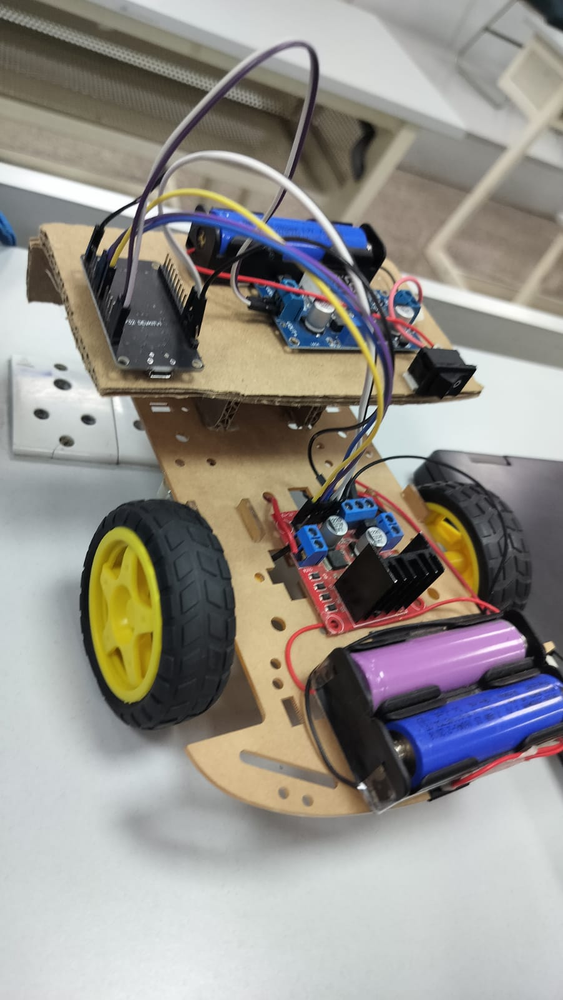

Hi, I'm Priti Yadav
AWS Certified Cloud Practitioner | GSSoC'26 Contributor | CS Student
Passionate about Python, Web Development, Cloud Computing and Open Source.
Download ResumeAbout Me
I am a Computer Science Engineering student with a strong interest in Software Development, Web Development, Python Programming, and Cloud Computing. I am an AWS Certified Cloud Practitioner and a proud GSSoC'26 Contributor, actively contributing to open-source projects and collaborating with developers worldwide. My technical skills include Python, C++, HTML, CSS, JavaScript, IoT, and cloud technologies. I enjoy building responsive web applications, developing innovative solutions, and continuously learning emerging technologies. I am passionate about solving real-world problems through technology and creating impactful digital experiences. .
My Skills
HTML5
CSS3
JavaScript
Python
C++
IoT
Education
B.Tech - Computer Science
KIET Group of Institutions
2025- 2029
Projects

Voice Activated Car
An IoT-based smart vehicle controlled through voice commands using Arduino, Bluetooth module, motor driver, and mobile application. The project enables hands-free navigation and demonstrates the integration of embedded systems with voice recognition technology.
Responsive Business Landing Page
Designed and developed a responsive business website using HTML and CSS.
Personal Portfolio Website
Created a responsive portfolio website showcasing skills, projects and certifications.
Contact Me
priti.25001193@kiet.edu
LinkedIn: Visit Profile
GitHub: Visit GitHub